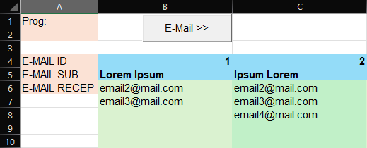

En esta guía se explicará como crear una planilla de Excel para enviar e-mails creados con plantillas a distintas listas de direcciones, todo desde cero, empezando con una planilla en blanco.
Se utilizará VBA y una hoja de cálculo con formato xlsm para guardar el código que escribamos.
This guide will explain how to create an Excel spreadsheet to send e-mails based on templates to different e-mail address lists, all from scratch, starting with a blank spreadsheet.
We will use VBA and a spreadsheet in .xlsm format to save the code we write.
Para empezar, crea una nueva hoja de cálculo en excel. Una vez que tenemos la hoja nueva en blanco, tocar la solapa de "Archivo", ir a "Guardar Como", seleccionar en donde querés guardar el archivo, ponerle el nombre que quieras a la hoja y finalmente (muy importante) seleccionar la opción de formato "Hoja de trabajo habilitada para macros de Excel (*.xlsm)".
En mi caso el archivo se llama mailTutorial y se ve como en la siguiente imagen:
To begin, create a new spreadsheet in Excel. Once you have the new blank sheet, click on "File", go to "Save As", choose where you want to save the file, give the sheet whatever name you want and finally (very important) select the file format "Excel Macro-Enabled Workbook (*.xlsm)."
In my case, the file is named mailTutorial and looks like in the following image:
Lo siguente que hay que corroborar es que haya una dirección tuya de e-mail añadida en el programa, si no la hay deberán iniciar sesión en Excel. Para revisar esto vayan a "Archivo" y seleccionen la opción "Cuenta".
Para finalizar la preparación hay que activar la solapa de Programador si es que ya no la tenés. En caso de no tener la pestaña de Programador en la cinta de opciones toca la parte de "Archivo", luego "Opciones", dentro del panel de opciones ir a la parte de "Personalizar la cinta de opciones", ahora seleccionar "Pestañas Principales" de la lista de comandos y finalmente clickear la casilla "Programador", tocar "Añadir" y terminamos con "Ok". Esta es la guía oficial de Microsoft para añadir la pestaña de Programador por si la necesitan.
Si hicieron todo bien les debería aparecer una opción llamada "Programador" en la cinta de opciones que se ve como la siguiente imagen:
The next thing we have to check is that there is an email address of yours added to the program. If there is not, you will need to sign in to Excel. To check this, go to "File" and select the "Account" option.
To finish the setup, you need to enable the Developer tab if you do not have it already. If the Developer tab is not visible in the ribbon, click on "File", then "Options", inside the options panel go to "Customize Ribbon", select "Main Tabs" from the "Choose commands from" menu and now simply select the "Developer" option, click "Add" and finish by pressing "OK". This is the official Microsoft guide for adding the Developer tab, in case you need it.
If you did everything correctly, your ribbon should have a tab called "Developer" that looks like the following image:
Hojas y fórmulas
Sheets and formulas
Con todo preparado podemos continuar, esta planilla estará compuesta de tres hojas: una que contendrá todas las plantillas de e-mail, una que contendrá las direcciones donde se enviarán los correos y otra que mantendrá un registro de todo lo que se envíe.
Empecemos con la primer hoja donde pondremos todas las plantillas de nuestros correos, recomiendo cambiarle el nombre porque lo vamos a usar de referencia, en mi caso se va a llamar "Mails".
La hoja "Mails" no es compleja, en la celda A1 ponemos el encabezado "ID", en la celda B1 "SUB" para los asuntos, en C1 escribimos "TEXT" para el texto del correo y finalmente en D1 "URL" para las direcciones a archivos locales (en tu PC) que quieras adjuntar.
Estos son solo encabezados que únicamente sirven para aclarar por lo que no hay problema en escribir lo que quieras en las celdas A1-D1
Ahora para la primer fórmula seleccionar la celda A2 e ingresar: =IF(B2 = ""; ""; ROW() - 1), esta fórmula generará de manera automática una ID a partir del número de fila al ingresar un asunto en la columna "SUB". Usar autoFill para copiar la fórmula en tantas celdas como quieras según la siguiente imagen:
With everything ready, we can continue. This spreadsheet will consist of three sheets: one that will contain all the e-mail templates, one that will contain all the e-mail recipient addresses and another that will keep a log of every sent e-mail.
Let's start with the first sheet where we will keep all our templates. I recommend renaming it because the name will be used as a reference later. In my case, I named it "Mails".
The "Mails" sheet is simple, in the cell A1 type "ID", next in cell B1 "SUB" for the subject, in C1 type "TEXT" for the body of the e-mail and finally in D1 type "URL" for the path to any local files (on your computer) you may want to attach.
These are just headers added for clarity so you can write whatever you want in the cells A1-D1
Now, for the first formula, select cell A2 and enter: =IF(B2 = "", "", ROW() - 1), this formula will automatically generate an ID for our templates whenever you add a subject in the "SUB" column. Use autoFill to copy the formula into as many cells as you need, like shown in the following image:
Ya estaría lista la primer hoja, ahora continuamos con la hoja donde mantendremos la lista de direcciones y que correo se le enviará a cada una. Creamos otra hoja y la nombramos, yo le puse "Mail-To".
Para comenzar ingresar AAAA o cualquier texto en las celdas A1 y A2, estás celdas se van a usar después. Luego colocamos algunos encabezados: "E-MAIL ID" en la celda A4, "E-MAIL SUB" en la celda A5 y finalmente "E-MAIL RECEP" en la celda A6.
Antes de seguir volver a la hoja "Mails" y añadir uno o dos correos de prueba, yo añadi dos correos de prueba con texto genérico y una URL de una foto que quiero adjuntar al correo, pueden ver estas platillas en la imagen anterior.
Con las plantillas de prueba hechas, regresar a la hoja "Mail-To" y agregar en B4 la fórmula =TRANSPOSE(FILTER(Mails!A2:A100; Mails!A2:A100 <> "")), lo que hace esta fórmula es obtener todas las ID de la hoja "Mails" filtrando las celdas vacías y el resultado es pasado de vertical a horizontal con la función =TRANSPOSE().
Ahora para la última fórmula, seleccionar la celda B5 e ingresar =IF(B4 = ""; ""; XLOOKUP(B4;Mails!$A$2:$A$100;Mails!$B$2:$B$100;"")) y luego arrastrar horizontalmente con autoFill hasta donde necesiten. Esta función busca la ID con XLOOKUP() en la hoja "Mails" y devuelve el asunto correspondiente, sirve para clarificar cual correo será enviado en cada columna.
Por último a partir de la fila 6 se pueden añadir verticalmente debajo del asunto todas las direcciones de e-mail de los destinatarios, yo añadí una dirección alternativa mía para ambos correos de prueba.
La hoja "Mail-To" les debería quedar como en la siguiente imagen a excepción de las direcciones de e-mail:
First sheet done, now we move on to the second in which we will store the e-mail addresses of our recipients and which template will be used for each. So we create and rename another sheet, I named it "Mail‑To".
Begin by entering AAAA or any text into the cells A1 and A2, we will use these later. Then add some headers: "E‑MAIL ID" in cell A4, "E‑MAIL SUB" in cell A5 and finally "E‑MAIL RECEP" in cell A6.
Before proceeding, go back to the "Mails" sheet and add one or two e-mails for testing. I added two test emails with some generic text and an URL to a picture i want to attach, you can see them in the previous image.
Once the testing templates are ready, return to the "Mail‑To" sheet and in the cell B4 enter the formula =TRANSPOSE(FILTER(Mails!A2:A100; Mails!A2:A100 <> "")), this formula gets IDs from the "Mails" sheet by filtering out blank cells and then converts the result from vertical to horizontal with TRANSPOSE().
Now for the final formula, select cell B5 and enter =IF(B4 = ""; ""; XLOOKUP(B4;Mails!$A$2:$A$100;Mails!$B$2:$B$100;"")) and drag horizontally as much as needed using autoFill. This function looks up each filtered ID with a XLOOKUP() function and returns the corresponding subject, makes clear which e-mail will be sent in each column.
Finally, starting from row 6 you can start vertically listing every e-mail recipient address under each subject. I added an alternate address of mine for both test e-mails.
The "Mail‑To" sheet should end up looking like the following image, except for the e-mail addresses:
Ahora creamos la tercera y última hoja donde se mantendrá un registro de todos los correos enviados, a esta hoja la nombre "Logs".
Lo único que hay que hacer en esta hoja (por ahora) es insertar una tabla para después. Entonces seleccionamos el rango A1:B1, apretamos las teclas CTRL+T para insertar una tabla y antes de tocar Ok tildamos la opción "La tabla tiene encabezados".
Con la tabla hecha le cambiamos los encabezados para que sean más descriptivos: al primero lo nombré "E-MAIL SUB" para poner en esa columna el asunto del correo enviado y al segundo "E-MAIL RECEP" para la dirección a donde se envió.
Por último hay que cambiarle el nombre a la tabla para usar como referencia, para hacer esto seleccionar cualquier celda de la tabla (A1 por ejemplo), ir a la pestaña "Diseño de tabla" en la cinta de opciones y debajo de la opción "Nombre de la tabla" (que debería estar en la esquina izquierda de las opciones de diseño de tabla) escribir el nuevo nombre, yo le puse "TABLOGS".
Les debería quedar una tabla vacía de dos columnas con el nombre "TABLOGS" (tener en cuenta el nombre si eligieron otro) como en la siguiente imagen:
Now we create the third and final sheet where we will keep a record of all sent e-mails; I named this sheet "Logs".
All we have to do on this sheet (for now) is to insert a table for later use. So select the range A1:B1, press the keys CTRL+T to insert a table and before clicking OK check the "My table has headers" option.
After the table is created we are going to change the headers to make them more descriptive: I named the first one "E-MAIL SUB" to place in that column the subject of the sent e-mails and the second one "E-MAIL RECEP" to store the recipient addresses.
To wrap this sheet up, we have to rename the table to use it as a reference. To do this, select any cell in the table (A1 for example), then go to the "Table Design" tab on the ribbon and under the "Table Name" option (which should be on the left corner of the table design options) enter the new name, I named it "TABLOGS".
You should end up with an empty two column table named "TABLOGS" (keep the name in mind if you chose a different one) like in the following image:
Código y controles
Code and controls
Con todas las hojas listas podemos empezar con la parte divertida, ir a la hoja "Mail-To" y abrir la pestaña "Programador". Hacer click en "Insertar" y elegir el "Botón de comando" debajo de la categoría "Controles ActiveX". Después de haber creado el botón darle click derecho y seleccionar el menú de propiedades, cambiar la propiedad "Name" a "MailToBtn" y la propiedad "Caption" (que está más abajo) a lo que quieras, es el texto del botón, sugiero escribirle "Enviar" o similar para dejar en claro su función, yo le puse "E-Mail >>". Antes de cerrar el menú pueden cambiar otras propiedades como "Font" (Fuente), "ForeColor" (Color de fuente), "Height" (Altura), "Left" (Ancho) o "Shadow" (Borde tipo sombra), son todas opciones únicamente cosméticas.
Al terminar de configurar el botón y haber cerrado el menú de propiedades, darle click derecho al botón otra vez y seleccionar "Ver código". Luego de hacer esto se tendría que abrir la ventana de VBA (Visual Basic for Applications) y verse como en la siguiente imagen:
With all three sheets ready, we can start with the fun part, go to the "Mail-To" sheet and open the "Developer" tab. Click on "Insert" and choose the "Command Button" under the "ActiveX Controls" category. After creating the button, right-click it and select the properties menu. Change the "Name" property to "MailToBtn" and the "Caption" property (which is further down) to whatever you want, it is just the text on the button, I suggest writing "Send" or something similar to make the button's function clear, I wrote "E-Mail >>". Before closing the menu, you can change other properties like "Font", "ForeColor" (Font's color), "Height", "Left" (Width) or "Shadow", these are all cosmetic only options.
After finishing the button configuration and closing the properties menu, right-click the button again and select "View Code". After doing this, the VBA (Visual Basic for Applications) window should open and look like in the following image:
Antes de continuar asegurarse de que el menu desplegable marcado en la imagen anterior diga "Click", porque eso significa que el código que vamos a insertar a continuación se ejecutará al hacerle click al botón "MailToBtn".
Otra cosa que hay que hacer es habilitar las librerias de Outlook y Forms, para esto ir al menú de "Herramientas" y seleccionar la opción "Referencias...". Buscar y tildar las casillas "Microsoft Outlook 16.0 Object Library" y "Microsoft Forms 2.0 Object Library", hacer click en Ok y ya podemos usar las librerias en el código.
Con el evento "Click" seleccionado y las librerias cargadas, copiar el siguiente bloque de código y pegarlo entre las líneas "Private Sub MailToBtn_Click()" y "End Sub". La explicación del código estará en el mismo, hecha con comentarios:
Before continuing, make sure that the dropdown menu marked in the previous image says "Click", because that means our code will execute when we click the "MailToBtn" button.
Another thing we need to do is enabling the Outlook and Forms libraries. To do this, go to the "Tools" menu and select the "References..." option. Search and check the boxes for "Microsoft Outlook 16.0 Object Library" and "Microsoft Forms 2.0 Object Library" and then click OK, now we can use these libraries in the code.
With the "Click" event selected and the libraries loaded, copy the following code block and paste it between the lines "Private Sub MailToBtn_Click()" and "End Sub". The explanation for it will be in the code itself, as comments:
'Lo primero que hacemos es chequear que hayan plantillas de e-mails para enviar
'Para lograr esto usamos la función COUNT() en la fila 4 para contar la cantidad de IDs tomadas de la hoja "Mails"
'También creamos e inicializamos variables para referirnos a las distintas hojas del documento
Dim HojaMailTo As Worksheet
Set HojaMailTo = Worksheets("Mail-To")
Dim HojaMails As Worksheet
Set HojaMails = Worksheets("Mails")
Dim HojaLogs As Worksheet
Set HojaLogs = Worksheets("Logs")
'Si la funcion COUNT() no encuentra más de 1 ID, se sale del evento y no se ejecuta el resto, mostrando porque en la celda A2
If WorksheetFunction.Count(HojaMailTo.Range("4:4")) <= 0 Then
HojaMailTo.Range("A2").Value = "No hay e-mails para enviar"
End
End If
'Guardamos el resultado de la función COUNT()
Dim cantidadIDs As Integer
cantidadIDs = WorksheetFunction.Count(HojaMailTo.Range("4:4"))
'Ahora procedemos a hacer un bucle para recorrer cada columna con una ID
'Creamos una variable para usar de indice y la inicializamos con el valor 2, que es el número de columna donde aparece nuestra primer ID de plantilla
'Aparte creamos otras variables que se reutilizaran en el bucle
'El bucle se ejecutará partiendo de la columna 2 hasta la columna "cantidadIDs + 1", el +1 es por la primer columna que solo posee encabezados
Dim indiceID As Integer
Dim ID As Integer
Dim cantidadDirecciones As Integer
Dim OutlookApp As Object
Set OutlookApp = CreateObject("Outlook.Application")
'Mostramos que se están procesando los correos
HojaMailTo.Range("A2").Value = "Trabajando"
For indiceID = 2 To (cantidadIDs + 1) Step 1
'Lo primero que hay que hacer es contar la cantidad de direcciones que hay en la columna, para esto usamos COUNTIF() y tomamos la columna actual usando OFFSET()
cantidadDirecciones = WorksheetFunction.CountIf(HojaMailTo.Range("A:A").Offset(0, (indiceID - 1)), "*@*.com*")
'Si hay por lo menos 1 dirección podemos enviar nuestros correos
If cantidadDirecciones > 0 Then
'Creamos variables con las partes de la plantilla y buscamos el contenido en la hoja Mails con XLOOKUP()
Dim emailSUB As String
Dim emailTEXT As String
Dim emailURL As String
Dim esURLValida As Boolean
ID = HojaMailTo.Cells(4, indiceID)
emailSUB = WorksheetFunction.XLookup(ID, HojaMails.Range("$A:$A"), HojaMails.Range("$B:$B"))
emailTEXT = WorksheetFunction.XLookup(ID, HojaMails.Range("$A:$A"), HojaMails.Range("$C:$C"))
emailURL = WorksheetFunction.XLookup(ID, HojaMails.Range("$A:$A"), HojaMails.Range("$D:$D"))
'Si hay una URL verificamos que sea válida
'Si falla la verificación se muestra un cartel y se saltean los correos de la plantilla con la URL inválida
esURLValida = False
If emailURL <> "" Then
If Dir(emailURL) = "" Then
MsgBox "El siguiente archivo no se encontró:" & vbNewLine & emailURL & vbNewLine & "Los correos con el asunto: '" & emailSUB & "' no se enviarán.", vbOKOnly, "Error"
cantidadDirecciones = 0
End If
esURLValida = True
End If
'A partir de la fila 6 se añaden las direcciones de manera vertical
'Por esto creamos otro bucle donde recorremos la columna hasta enviar todos los correos encontrados con el COUNTIF() de más arriba
'Además creamos una variable para referirnos a la tabla TABLOGS de la hoja Logs
Dim tablaRegistros As ListObject
Set tablaRegistros = HojaLogs.ListObjects("TABLOGS")
Dim indiceDireccion As Integer
indiceDireccion = 6
Do While cantidadDirecciones > 0
'Ignorar celdas que no cumplan el patrón "*@*.com*"
If Cells(indiceDireccion, indiceID).Value Like "*@*.com*" Then
Dim correo As Object
Set correo = OutlookApp.CreateItem(0)
'Cargamos todos los datos del correo y lo enviamos con Send
'Si quieren ver el correo para revisarlo y/o enviarlo manualmente, reemplazar ".Send" por ".Display"
With correo
.To = Cells(indiceDireccion, indiceID).Value
.Subject = emailSUB
.Body = emailTEXT
If esURLValida Then
.Attachments.Add (emailURL)
End If
.Send
End With
Set correo = Nothing
'Registramos el envio en la hoja Logs, dentro de la tabla TABLOGS
Dim nuevoRegistro As ListRow
Set nuevoRegistro = tablaRegistros.ListRows.Add
nuevoRegistro.Range(1, 1).Value = emailSUB
nuevoRegistro.Range(1, 2).Value = Cells(indiceDireccion, indiceID).Value
cantidadDirecciones = cantidadDirecciones - 1
End If
indiceDireccion = indiceDireccion + 1
Loop
End If
Next indiceID
'Esperamos a que se envien todos los correos y mostramos el progreso en la celda A2 de la hoja Mail-To
Dim outlookApi As Outlook.Namespace
Dim bandejaSalida As Outlook.Folder
Dim cantidadCorreosRestantes As Integer
Set outlookApi = OutlookApp.GetNameSpace("MAPI")
Set bandejaSalida = outlookApi.GetDefaultFolder(olFolderOutbox)
cantidadCorreosRestantes = bandejaSalida.Items().Count
'Actualizamos el contador cada 1 segundo hasta terminar
Do While cantidadCorreosRestantes > 0
cantidadCorreosRestantes = bandejaSalida.Items().Count
HojaMailTo.Range("A2").Value = cantidadCorreosRestantes & " E-Mails restantes"
Application.Wait Now + #12:00:01 AM#
Loop
'Cerramos la aplicación de Outlook y limpiamos el resto de los demás objetos
'Finalmente indicamos que el código terminó su ejecución
'En caso de usar ".Display" en vez de ".Send" deberán escribir "End" justo debajo de este comentario para evitar que se cierre la aplicación de Outlook. En este caso la van a tener que cerrar manualmente o usando el botón "Reset" (el cuadrado azul en el cuadro de herramientas)
OutlookApp.Quit
outlookApi.Application.Quit
Set OutlookApp = Nothing
Set outlookApi = Nothing
Set bandejaSalida = Nothing
HojaMailTo.Range("A2").Value = "Listo"
'The first thing we need to do is checking if there is any email templates to send
'To do this we use the COUNT() function in row 4 to count the amount of IDs found by the FILTER() function
'We also create and initialize variables to refer to the different sheets in the document
Dim MailToSheet As Worksheet
Set MailToSheet = Worksheets("Mail-To")
Dim MailsSheet As Worksheet
Set MailsSheet = Worksheets("Mails")
Dim LogsSheet As Worksheet
Set LogsSheet = Worksheets("Logs")
'If the COUNT() function does not find more than 1 ID, it exits the event and does not execute the rest, showing the reason in cell A2
If WorksheetFunction.Count(MailToSheet.Range("4:4")) <= 0 Then
MailToSheet.Range("A2").Value = "No e-mails to send"
End
End If
'We save the COUNT() result
Dim idCount As Integer
idCount = WorksheetFunction.Count(MailToSheet.Range("4:4"))
'Now we proceed to loop through each column with an ID
'We create a variable to use as an index and initialize it with the value 2, which is the column number where our first template appears
'We also create other variables that will be reused in the loop
'The loop will run through all columns with a template ID, starting from column 2 up to column "idCount + 1", the +1 is for the first column which only has headers
Dim idIndex As Integer
Dim ID As Integer
Dim addressCount As Integer
Dim OutlookApp As Object
Set OutlookApp = CreateObject("Outlook.Application")
'We display that we are processing the e-mails
MailToSheet.Range("A2").Value = "Working"
For idIndex = 2 To (idCount + 1) Step 1
'The first thing to do is count the number of addresses in the column, for this we use COUNTIF() and reference the current column using OFFSET()
addressCount = WorksheetFunction.CountIf(MailToSheet.Range("A:A").Offset(0, (idIndex - 1)), "*@*.com*")
'If there is at least 1 address we can send our e-mails
If addressCount > 0 Then
'We create variables with the parts of our template and search the content in the Mails sheet with XLOOKUP()
Dim emailSUB As String
Dim emailTEXT As String
Dim emailURL As String
Dim isURLValid As Boolean
ID = MailToSheet.Cells(4, idIndex)
emailSUB = WorksheetFunction.XLookup(ID, MailsSheet.Range("$A:$A"), MailsSheet.Range("$B:$B"))
emailTEXT = WorksheetFunction.XLookup(ID, MailsSheet.Range("$A:$A"), MailsSheet.Range("$C:$C"))
emailURL = WorksheetFunction.XLookup(ID, MailsSheet.Range("$A:$A"), MailsSheet.Range("$D:$D"))
'If there is an URL we verify that it is valid
'If verification fails we show a pop-up and e-mails with the invalid URL are avoided
isURLValid = False
If emailURL <> "" Then
If Dir(emailURL) = "" Then
MsgBox "The following file was not found:" & vbNewLine & emailURL & vbNewLine & "E-Mails with the subject: '" & emailSUB & "' will not be sent.", vbOKOnly, "Error"
addressCount = 0
End If
isURLValid = True
End If
'Starting from row 6, the addresses are added vertically
'Because of this, we create another loop where we go through the column until all emails found with the COUNTIF() above are sent
'We also create a variable to refer to the TABLOGS table on the Logs sheet
Dim logTable As ListObject
Set logTable = LogsSheet.ListObjects("TABLOGS")
Dim addressIndex As Integer
addressIndex = 6
Do While addressCount > 0
'Ignore cells that do not match the "@.com*" pattern
If Cells(addressIndex, idIndex).Value Like "*@*.com*" Then
Dim mail As Object
Set mail = OutlookApp.CreateItem(0)
'We load all the mail data and send it with "Send"
'If you want to check the mail and/or send it manually, replace ".Send" for ".Display"
With mail
.To = Cells(addressIndex, idIndex).Value
.Subject = emailSUB
.Body = emailTEXT
If isURLValid Then
.Attachments.Add (emailURL)
End If
.Send
End With
Set mail = Nothing
'We save the sent email in our TABLOGS table in the Logs sheet
Dim newLog As ListRow
Set newLog = logTable.ListRows.Add
newLog.Range(1, 1).Value = emailSUB
newLog.Range(1, 2).Value = Cells(addressIndex, idIndex).Value
addressCount = addressCount - 1
End If
addressIndex = addressIndex + 1
Loop
End If
Next idIndex
'Wait until all e-mails are sent and show progress in cell A2 on the Mail-To sheet
Dim outlookApi As Outlook.Namespace
Dim outBox As Outlook.Folder
Dim remainingMailsCount As Integer
Set outlookApi = OutlookApp.GetNameSpace("MAPI")
Set outBox = outlookApi.GetDefaultFolder(olFolderOutbox)
remainingMailsCount = outBox.Items().Count
'Update the counter after every second until we finish
Do While remainingMailsCount > 0
remainingMailsCount = outBox.Items().Count
MailToSheet.Range("A2").Value = remainingMailsCount & " pending E-Mails"
Application.Wait Now + #12:00:01 AM#
Loop
'We close the Outlook application and clean up the other objects
'Finally we indicate that the code finished has finished
'In case of using ".Display" instead of ".Send", you will have to write "End" right below this comment to prevent the Outlook application from closing. In this case, you will have to close it manually or by using the "Reset" button (the blue square in the toolbar)
OutlookApp.Quit
outlookApi.Application.Quit
Set OutlookApp = Nothing
Set outlookApi = Nothing
Set outBox = Nothing
MailToSheet.Range("A2").Value = "Done"
Después de pegar el código ir a "Archivo" y guardar. Tras hacer eso, cerrar la ventana de VBA e ir a la pestaña de "Programador" en Excel, buscar el botón "Modo Diseño" y destildarlo (si al clickear el botón "MailToBtn" este se selecciona entonces el modo de diseño no fue desactivado).
Ahora pueden clickear el botón en "Mail-To" para ejecutar el código y enviar los correos. Podrán ver el progreso en la celda A2, en la celda A1 reemplazar AAAA o el texto que hayan puesto por un encabezado como "Estado" o "Progreso".
Luego de haber enviado por lo menos 1 e-mail, pueden revisar el historial guardado en la hoja "Logs".
Para comprobar que todo funcione bien envié a mi dirección alternativa de Gmail 2 correos con las plantillas creadas anteriormente, el resultado se puede ver en la siguiente imagen:
After pasting the code, go to "File" and save. Then close the VBA window and go to the "Developer" tab in Excel, find the "Design Mode" button and uncheck it (if clicking the "MailToBtn" button selects it, it means the design mode is still active).
Now you can click the "MailToBtn" button in the "Mail-To" sheet to run the code and send the emails. You will see the progress in cell A2, in cell A1 replace AAAA or whatever text you wrote earlier with a header like "Status" or "Progress".
When you are done sending at least 1 e-mail you can check the saved record in the "Logs" sheet.
To test that everything is working properly, I sent 2 emails to my alternate Gmail address using the templates created earlier. The result can be seen in the following image:
Reglas de estilo
Style rules
Esta parte del tutorial es completamente opcional porque solo sirve para hacer que las hojas sean más legibles y se vean más bonitas.
Lo que haremos será usar fórmulas para aplicar formato condicional en, primero, la hoja "Mail-To". Esto se hace de la siguiente manera: Ir a la pestaña "Inicio", presionar CTRL+A para seleccionar toda la hoja, clickear el botón "Formato condicional" y seleccionar la opción "Nueva Regla...". Tras abrir el menú de formato condicional, en tipo de regla elegir "Usar una fórmula que determine las celdas para aplicar formato" y en el cuadro de fórmula ingresar =AND(MOD(COLUMN();2) = 0; ROW() >= 6), finalmente clickear el botón "Formato..." y en ese menú formatear a gusto, yo simplemente elegí un color de fondo claro (recomiendo usar colores claros o dejar el blanco), al terminar de formatear tocar Ok y listo.
Para complementar la regla anterior repetimos el mismo proceso pero esta vez ingresamos la fórmula =AND(MOD(COLUMN();2) <> 0; ROW() >= 6; COLUMN() <> 1) y creamos otro formato, yo elegí un color claro distinto.
Para explicar un poco, el formato que elijan será aplicado a las celdas que cumplan con las condiciones descritas en la fórmula introducida. En el caso de =AND(MOD(COLUMN();2) <> 0; ROW() >= 6; COLUMN() <> 1) se van a pintar todas las celdas con un número de columna impar ("MOD(COLUMN();2) <> 0", el resto de [Número de columna / 2] es distinto de 0) Y estén de la fila 6 en adelante ("ROW() >= 6") Y no estén en la columna 1 ("COLUMN() <> 1").
Acá hay un par de fórmulas extra para las celdas que contienen:
Estado de progreso: =AND(ROW() <= 2; COLUMN() = 1)
Encabezados: =AND(ROW() > 3; ROW() < 7; COLUMN() = 1)
IDs y asuntos: =AND(ROW() > 3; ROW() < 6; COLUMN() <> 1)
Con todas las reglas anteriores aplicadas la hoja "Mail-To" (con los formatos que yo elegí) se ve como en la siguiente imagen:
This part of the tutorial is completely optional, as it only serves to make the sheets prettier and more readable.
What we are going to do is use formulas to apply conditional formatting, starting from the "Mail-To" sheet. This is done as follows: go to the "Home" tab, press CTRL+A to select the entire sheet, click the "Conditional Formatting" button and select the "New Rule..." option. After opening the conditional formatting menu, in rule type choose "Use a formula to determine which cells to format" and in the formula box enter =AND(MOD(COLUMN();2) = 0; ROW() >= 6). Finally, click the "Format..." button and create whatever format you like, I simply chose a light background color (I recommend using light colors or leaving it white). Once you finish formatting, click OK and done.
To complement the previous rule, repeat the same process but this time enter the formula =AND(MOD(COLUMN();2) <> 0; ROW() >= 6; COLUMN() <> 1) and create another format, I chose a different light color.
To explain a bit, the format you choose will be applied to the cells that meet the conditions described in the entered formula. In the case of =AND(MOD(COLUMN();2) <> 0; ROW() >= 6; COLUMN() <> 1) all cells with an odd column number ("MOD(COLUMN();2) <> 0", the remainder of [Column number / 2] is not 0) AND that are from row 6 onward ("ROW() >= 6") AND that are not in column 1 ("COLUMN() <> 1") will be formatted.
Here are a few extra formulas for cells that contain:
Progress status: =AND(ROW() <= 2; COLUMN() = 1)
Headers: =AND(ROW() > 3; ROW() < 7; COLUMN() = 1)
IDs and subjects: =AND(ROW() > 3; ROW() < 6; COLUMN() <> 1)
With all of the rules above applied, the "Mail-To" sheet (with the formats I chose) looks like in the following image:

Antes de terminar, pueden usar las siguientes fórmulas para la hoja "Mails":
Encabezados: =AND(ROW() = 1;COLUMN() < 5)
Filas pares: =AND(MOD(ROW();2) = 0; ROW() > 1; COLUMN() < 5)
Filas impares: =AND(MOD(ROW();2) <> 0; ROW() > 1; COLUMN() < 5)
Imagen para demostrar resultado:
Before finishing, you can use the following formulas for the "Mails" sheet:
Headers: =AND(ROW() = 1;COLUMN() < 5)
Even rows: =AND(MOD(ROW();2) = 0; ROW() > 1; COLUMN() < 5)
Odd rows: =AND(MOD(ROW();2) <> 0; ROW() > 1; COLUMN() < 5)
Image to show the result:
Y bueno eso es todo, espero que les haya sido útil o interesante.
Well, that's it, I hope this was useful or interesting.